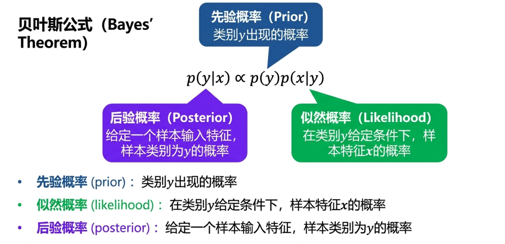
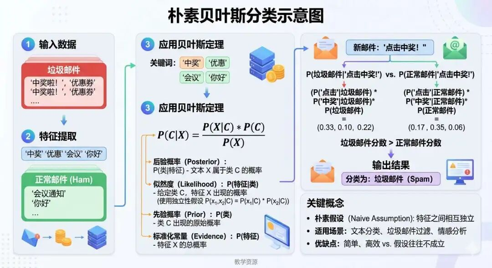

数据是新的石油，但我们需要更聪明的方式来使用它。 "OpenAI 创始人--山姆·奥特曼
今天我们要来讲解朴素贝叶斯算法，这是一种基于概率统计学的机器学习算法，有关于这一算法我们在前面讲解机器学习思想的时候有过简单的提及。
它的核心思路，是把样本原本属于某个类别的"先验判断"，和观察到特征后的"新证据"结合起来，重新计算样本属于各个类别的可能性，从而完成分类。
我们先来复习一下这三个概率的定义：
这三个概率虽然定义不同，但是它们之间存在一个关系，贝叶斯公式：
后验概率 = 先验概率 * 似然概率 / 证据概率(分母)
这个公式的分母是证据概率，但实际运用时，分母对所有类别（好瓜、坏瓜）都是一样的，相当于一个"标准化常数"，就像考试排名时，总分除以班级人数不影响名次。
因此，只需使用分子部分的乘积：先验概率 * 似然概率 或是 后验概率 ∝ 似然度 × 先验概率， ∝ 表示正比于。

我们还是直接用一个生活中的例子，让你立马能够理解什么是朴素贝叶斯，什么是先验概率、似然概率、后验概率：
假设医生要判断这样一个患者是否患有流感，患者症状：发烧、咳嗽，为了便于说明，我们先把这个问题简化成一个二分类问题：患者只可能是"流感"或"普通感冒"中的一种。
然后我们分别来计算先验概率、似然概率、后验概率：
1、先验概率：
医生根据经验，在流感季节，会有10% 左右的人患病，则此时先验概率P(流感)=0.1，则普通感冒的先验概率 P(普通感冒)= 1 - 0.1 = 0.9
2、似然概率：
得了流感的情况下患者有发烧症状的概率是 80%，则似然概率为：P(发烧|流感)=0.8，患者还有咳嗽症状，则咳嗽的似然概率为：P(咳嗽|流感)=0.6
3、计算近似后验概率：
流感近似得分 = 先验概率P(流感) * 似然概率P(发烧|流感) * 似然概率P(咳嗽|流感) = 0.1 × 0.8 × 0.6 = 0.048
$$ 普通感冒得分 = 先验概率P(普通感冒) * 似然概率P(发烧|普通感冒) * 似然概率P(咳嗽|普通感冒) = 0.9 × 0.3 × 0.4 = 0.108 $$结论：0.108 ＞ 0.048，此时更可能判为普通感冒
上面这个例子，帮助我们直观理解了"先验概率 + 似然概率 -> 分类判断"这条思路。
接下来，我们正式进入机器学习中的朴素贝叶斯分类器，看看它是怎样把这个思想变成一个真正可训练模型的。
不知道大家有没有发现，在上面这个例子中，计算最终分类概率的时候，这个概率是近似的后验概率，而不是精准的，这是为什么呢？
这是因为，贝叶斯定理的前提是独立性假设，即在类别已经确定的条件下，各个特征之间的关系是完全相互独立的，相互不干扰的。

这是什么意思呢？举个简单例子：如果我们要判断一封邮件是不是垃圾邮件，可能会关注其中是否出现"免费""中奖""优惠"等词。
在现实中，这些词往往不是完全独立的，出现了"中奖"，往往也更容易出现"免费"；出现了"优惠"，也可能伴随着"限时"这类词一起出现。
但为了让模型更容易计算，朴素贝叶斯会先假设：在类别已经确定的前提下，这些特征之间彼此独立，互不影响。也正因为这个假设比较"朴素"、比较理想化，所以这个模型才叫"朴素贝叶斯"。
假设所有特征在给定类别下相互独立，即：
$$ \underbrace{P(X|Y)}_{\text{条件概率：给定类别}Y\text{时特征向量}X\text{的概率}} = \underbrace{\prod_{i=1}^d}_{\text{对}d\text{个特征维度连乘（特征条件独立假设）}} \underbrace{P(X_i|Y)}_{\text{给定类别}Y\text{时第}i\text{个特征}X_i\text{的条件概率}} $$这个假设的好处在于，它极大地简化了计算。如果不做这个假设，我们就需要直接估计多个特征同时出现的联合似然概率，这会让参数数量迅速膨胀，对训练数据量和计算复杂度的要求都会明显提高。
虽然简化之后得到的概率估计不一定完全精准，但在很多实际任务中，它的表现依然相当不错。
尤其是在文本分类、情感分析、垃圾邮件过滤这类高维稀疏数据场景中，朴素贝叶斯常常能作为一个训练速度快、效果稳定的基线模型。
在朴素贝叶斯中，模型的训练过程被称之为参数估计，其目的是通过训练数据计算出两个关键概率，即先验概率和似然概率。
与很多需要反复迭代优化参数的模型不同，朴素贝叶斯通常不需要复杂的梯度下降过程，而是通过对训练数据进行频数统计，就能完成主要参数的估计，因此训练速度通常很快，实现起来也相对简单。
1）先验概率 $P(Y)$ ：直接统计某一类别在训练集中的初始分布比例。例如，在垃圾邮件分类中，若训练数据中30%是垃圾邮件，则 P(垃圾邮件) = 0.3 。
2）条件概率 $P(X_i|Y)$ ：表示在已知类别 Y 的情况下，某个特征 Xi 出现的概率。例如，垃圾邮件中出现"免费"一词的概率
拉普拉斯平滑
在实际统计中，可能会遇到这样一种情况：某个特征在某一类样本中从未出现过。比如"中奖"这个词从未在正常邮件中出现过。
如果直接按频数统计，那么对应的似然概率就会变成 0，而在朴素贝叶斯中，各个似然概率是要连乘的，只要其中一项为 0，整个类别得分都会变成 0，这显然不合理。
因此，我们通常会引入拉普拉斯平滑（加 1 修正）来避免这个问题：
$$ P(X_i|Y) = \frac{\text{计数} + 1}{\text{类别样本数} + \text{特征可能取值数}} $$例如，某特征有3种取值，正常邮件共100封，修正后分母为 100 + 3 ，分子为 0 + 1 ，得到非零概率 。
我们以垃圾邮件过滤为例，假设训练数据包含 7封邮件，其中 4封为垃圾邮件（标签1），3封为非垃圾邮件（标签0）。特征词为 "免费" 和 "赢得"，统计结果如下：
| 邮件类型 | 邮件数量 | "免费"出现次数 | "赢得"出现次数 |
|---|---|---|---|
| 垃圾邮件 | 4 | 3 | 2 |
| 非垃圾邮件 | 3 | 1 | 2 |
这里我们采用的是二值化特征表示法，也就是每个词只有两种状态：出现（1）或未出现（0）。因此在使用拉普拉斯平滑时，每个特征的可能取值数为 2，所以分母都要加 2。
| 类别 | 先验概率 P(Y) |
|---|---|
| 垃圾邮件 | $\frac{4}{7} \approx 0.571$ |
| 非垃圾邮件 | $\frac{3}{7} \approx 0.429$ |
| 特征词 | $P(\text{特征} \mid \text{垃圾邮件})$ | $P(\text{特征} \mid \text{非垃圾邮件})$ |
|---|---|---|
| 免费=1 | $\frac{3+1}{4+2} = \frac{4}{6} \approx 0.667$ | $\frac{1+1}{3+2} = \frac{2}{5} = 0.4$ |
| 免费=0 | $\frac{1+1}{4+2} = \frac{2}{6} \approx 0.333$ | $\frac{3}{5} = 0.6$ |
| 赢得=1 | $\frac{2+1}{4+2} = \frac{3}{6} = 0.5$ | $\frac{2+1}{3+2} = \frac{3}{5} = 0.6$ |
| 赢得=0 | $\frac{2+1}{4+2} = \frac{3}{6} = 0.5$ | $\frac{1+1}{3+2} = \frac{2}{5} = 0.4$ |
假设新邮件特征为 "免费=1"（包含"免费"），"赢得=0"（不包含"赢得"）。
计算两类后验概率得分（忽略分母 P(X) ）：
垃圾邮件得分P(垃圾邮件) ：
$$ P(免费=1|垃圾邮件) * P(赢得=0|垃圾邮件) = 0.571 *0.667 * 0.5 ≈ 0.190 $$非垃圾邮件得分：
$$ P(非垃圾邮件) * P(免费=1|非垃圾邮件*P(赢得=0|非垃圾邮件) = 0.429 * 0.4 *0.4 ≈ 0.069 $$接下来进行归一化，总得分为：
$$ 0.190+0.069=0.259 $$因此最终后验概率约为：
所以，这封新邮件最终会被判定为：垃圾邮件。
朴素贝叶斯算法的核心，源于概率统计学中的贝叶斯定理。它通过把历史统计信息或先验认知与当前观察到的特征结合起来，动态更新对样本所属类别的判断，从而完成分类决策。
为了简化计算，它做出了一个关键的"朴素"假设：在给定类别条件下，各个特征彼此独立。尽管这一假设在现实中往往难以严格成立，但朴素贝叶斯依然凭借清晰的数学基础、极高的计算效率，以及对文本类高维稀疏数据的良好适应能力，在机器学习领域占据了一席之地。
它尤其适合文本分类、情感分析、垃圾邮件识别等任务，常被作为一个实现简单、训练快速、效果稳定的入门模型或基线模型。
当然，它的局限也很明显：一旦特征之间存在较强相关性，模型的独立性假设就会偏离现实，从而影响概率估计的准确性。
但也正因为如此，朴素贝叶斯才特别适合作为机器学习入门阶段的重要算法。
它让我们第一次真正看到：机器不是靠"背答案"来分类，而是靠概率、统计和推断，一步一步做出判断。